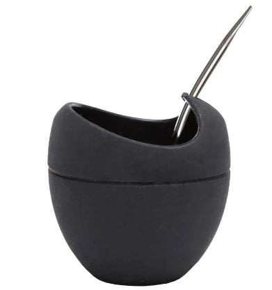

Porongo o calabaza:
Es el estilo de mate que más se utiliza, debido a que con la calabaza, son más ricos y tienen un mejor sabor, además poseen una gran variedad de formas y tamaños. La única desventaja, es que si no lo mantenemos limpios y secos una vez que terminamos de tomar, puede quedar humedad y con el tiempo aparecen hongos.
De Madera:
Estos mates son elegidos principalmente porque aportan el aroma propio del árbol, que pueden ser aromas a rosas y cítricos. La desventaja que tiene es que pueden rajarse ante cambios de temperatura y es importante que sean de maderas duras o semiduras y no muy aromáticas, que puedan invadir de manera agresiva el sabor de los mates.
De Vidrio, cerámica o porcelana:
El material de su interior es neutro e inorgánico, por lo que el mate no afecta el sabor de la yerba y es menos probable que junte hongos o bacterias. Lo malo de este tipo de mate es que son frágiles y muy sensibles a los cambios bruscos de temperatura.
De Metal:
Son muy duraderos, ya que el metal es muy resistente a los golpes y caídas, como también a la corrosión y óxido, además no necesitan ser curados. La desventaja de los mates de metal es que el calor del agua puede aumentar la temperatura del metal y dificultar el cebado y si son de boca angosta, la yerba se moja muy rápido y los mates pierden sabor.
De pomelo:
Es el más eco-amigable que existe, solamente hay que vaciar el interior de un pomelo y rellenarlo con yerba mate. Es una muy buena idea para aprovechar la vitamina C que aporta esta fruta y las cualidades antioxidantes del mate. La desventaja es que solo dura una ronda de mates.
De silicona:
Son los más modernos, son fáciles de limpiar y su principal ventaja es que no fijan bacterias ni sabores; conservan el calor, son irrompibles y de vaciado super fácil. El problema de estos mates es que al ser blandos y flexibles, a veces se vuelcan y se producen accidentes.